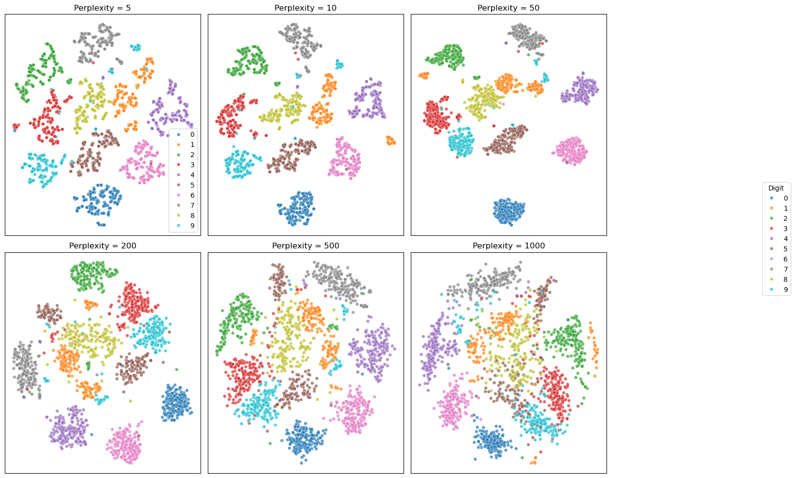
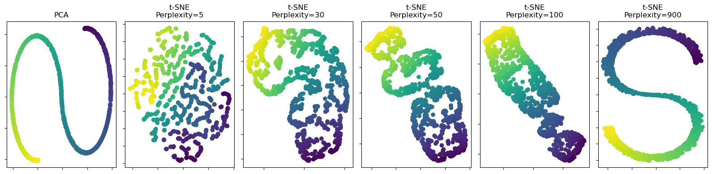

Nonlinear Dimensionality Reduction#
PCA is a linear method, and it may not work well for nonlinear data. One popular nonlinear method is t-distributed stochastic neighbor embedding (t-SNE).
Let \(x_i\) be a data point in high dimensional space, and \(y_i\) be its corresponding low dimensional (e.g. 2D) representation. We want to adjust the location of \(y_i\) such that if \(x_i\) and \(x_j\) are close in high dimensional space, then \(y_i\) and \(y_j\) should also be close in low dimensional space.
from sklearn.datasets import load_digits
from sklearn.manifold import TSNE
import seaborn as sns
import matplotlib.pyplot as plt
X,y = load_digits(return_X_y=True)
tsne = TSNE(n_components=2, random_state=0)
X_tsne = tsne.fit_transform(X)
sc = sns.scatterplot(x=X_tsne[:, 0], y=X_tsne[:, 1], hue=y, legend='full', s=24, alpha=0.7, palette='tab10')

digit = 1
indices_of_digit = np.where(y == digit)[0] # Get all indices where the digit is 3
X_tsne_digit = X_tsne[indices_of_digit] # Filter t-SNE results for 3s
# Find the index of the minimum X1 value among all '1' digits
min_index = np.argmin(X_tsne_digit[:, 0])
actual_min_index = indices_of_digit[min_index] # Get the actual index in the original dataset
max_index = np.argmax(X_tsne_digit[:, 0])
actual_max_index = indices_of_digit[max_index]
# Extract the corresponding image
image_of_digit_min = X[actual_min_index].reshape(8, 8) # Reshape the flat vector back to 8x8
image_of_digit_max = X[actual_max_index].reshape(8, 8)
# Visualize the image
fig, axes = plt.subplots(1, 2)
axes[0].imshow(image_of_digit_min, cmap='binary')
axes[0].set_title('Digit 1 with Min X1')
axes[1].imshow(image_of_digit_max, cmap='binary')
axes[1].set_title('Digit 1 with Max X1')
Text(0.5, 1.0, 'Digit 1 with Max X1')

# Show t-SNE results for different perplexities, with only one legend on the right
import numpy as np
perplexities = [3, 10, 50, 200, 500, 1000]
fig, axes = plt.subplots(2, 3, figsize=(15, 10))
for i, (ax, perp) in enumerate(zip(axes.flat, perplexities)):
tsne = TSNE(n_components=2, perplexity=perp, random_state=42)
X_tsne = tsne.fit_transform(X)
sc = sns.scatterplot(
x=X_tsne[:, 0], y=X_tsne[:, 1], hue=y , s=24, alpha=0.7, palette='tab10', ax=ax
)
ax.set_title(f"Perplexity = {perp}")
ax.set_xticks([])
ax.set_yticks([])
# Only show the legend for the first subplot, and move it to the right of the figure
handles, labels = axes.flat[0].get_legend_handles_labels()
fig.legend(handles, labels, title="Digit", bbox_to_anchor=(1.05, 0.5), loc='center left')
plt.tight_layout(rect=[0, 0, 0.85, 1])
plt.show()

import scanpy as sc
# Load example single-cell data
adata = sc.datasets.pbmc3k() # PBMC 3k dataset (real RNA-seq data)
sc.pp.normalize_total(adata, target_sum=1e4)
sc.pp.log1p(adata)
sc.pp.highly_variable_genes(adata, n_top_genes=1000, subset=True)
sc.pp.scale(adata)
# PCA + t-SNE
sc.tl.pca(adata, svd_solver='arpack')
sc.tl.tsne(adata, perplexity=30) # You can try different values
# Plot
sc.pl.tsne(adata, color=['CST3', 'NKG7', 'PPBP'], size=10, title='t-SNE on PBMC 3k')
---------------------------------------------------------------------------
KeyError Traceback (most recent call last)
Cell In[9], line 15
12 sc.tl.tsne(adata, perplexity=30) # You can try different values
14 # Plot
---> 15 sc.pl.tsne(adata, color=['CST3', 'NKG7', 'PPBP'], size=10, title='t-SNE on PBMC 3k')
File ~/opt/anaconda3/envs/math10/lib/python3.12/site-packages/scanpy/plotting/_tools/scatterplots.py:727, in tsne(adata, **kwargs)
689 @_wraps_plot_scatter
690 @_doc_params(
691 adata_color_etc=doc_adata_color_etc,
(...)
695 )
696 def tsne(adata: AnnData, **kwargs) -> Figure | Axes | list[Axes] | None:
697 """Scatter plot in tSNE basis.
698
699 Parameters
(...)
725
726 """
--> 727 return embedding(adata, "tsne", **kwargs)
File ~/opt/anaconda3/envs/math10/lib/python3.12/site-packages/scanpy/plotting/_tools/scatterplots.py:279, in embedding(adata, basis, color, mask_obs, gene_symbols, use_raw, sort_order, edges, edges_width, edges_color, neighbors_key, arrows, arrows_kwds, groups, components, dimensions, layer, projection, scale_factor, color_map, cmap, palette, na_color, na_in_legend, size, frameon, legend_fontsize, legend_fontweight, legend_loc, legend_fontoutline, colorbar_loc, vmax, vmin, vcenter, norm, add_outline, outline_width, outline_color, ncols, hspace, wspace, title, show, save, ax, return_fig, marker, **kwargs)
277 for count, (value_to_plot, dims) in enumerate(zip(color, dimensions)):
278 kwargs_scatter = kwargs.copy() # is potentially mutated for each plot
--> 279 color_source_vector = _get_color_source_vector(
280 adata,
281 value_to_plot,
282 layer=layer,
283 mask_obs=mask_obs,
284 use_raw=use_raw,
285 gene_symbols=gene_symbols,
286 groups=groups,
287 )
288 color_vector, color_type = _color_vector(
289 adata,
290 value_to_plot,
(...)
293 na_color=na_color,
294 )
296 # Order points
File ~/opt/anaconda3/envs/math10/lib/python3.12/site-packages/scanpy/plotting/_tools/scatterplots.py:1200, in _get_color_source_vector(adata, value_to_plot, mask_obs, use_raw, gene_symbols, layer, groups)
1198 values = adata.raw.obs_vector(value_to_plot)
1199 else:
-> 1200 values = adata.obs_vector(value_to_plot, layer=layer)
1201 if mask_obs is not None:
1202 values[~mask_obs] = np.nan
File ~/opt/anaconda3/envs/math10/lib/python3.12/site-packages/anndata/_core/anndata.py:1297, in AnnData.obs_vector(self, k, layer)
1291 warnings.warn(
1292 "In a future version of AnnData, access to `.X` by passing"
1293 " `layer='X'` will be removed. Instead pass `layer=None`.",
1294 FutureWarning,
1295 )
1296 layer = None
-> 1297 return get_vector(self, k, "obs", "var", layer=layer)
File ~/opt/anaconda3/envs/math10/lib/python3.12/site-packages/anndata/_core/index.py:245, in get_vector(adata, k, coldim, idxdim, layer)
243 elif (in_col + in_idx) == 0:
244 msg = f"Could not find key {k} in .{idxdim}_names or .{coldim}.columns."
--> 245 raise KeyError(msg)
246 elif in_col:
247 return getattr(adata, coldim)[k].values
KeyError: 'Could not find key CST3 in .var_names or .obs.columns.'
<Figure size 2183.4x480 with 0 Axes>
pca.components_
array([[-6.13623257e-02, -1.95302071e-03, 9.98113646e-01],
[ 9.98115359e-01, -7.49312547e-04, 6.13609648e-02]])
# Compare PCA and t-SNE on the S-curve dataset with varying perplexity
from time import time
import matplotlib.pyplot as plt
import numpy as np
from matplotlib.ticker import NullFormatter
from sklearn import datasets, manifold, decomposition
n_components = 2
perplexities = [5, 30, 50, 100, 900]
# Generate S-curve data
n_samples = 1000
X, color = datasets.make_s_curve(n_samples, random_state=0)
fig, axes = plt.subplots(1, 1 + len(perplexities), figsize=(16, 4))
# PCA
pca = decomposition.PCA(n_components=2)
X_pca = pca.fit_transform(X)
print(pca.components_)
ax = axes[0]
ax.scatter(X_pca[:, 0], X_pca[:, 1], c=color)
ax.set_title("PCA")
ax.xaxis.set_major_formatter(NullFormatter())
ax.yaxis.set_major_formatter(NullFormatter())
# t-SNE with different perplexities
for i, perplexity in enumerate(perplexities):
ax = axes[i + 1]
t0 = time()
tsne = manifold.TSNE(
n_components=n_components,
init="random",
random_state=0,
perplexity=perplexity,
learning_rate="auto",
max_iter=300,
)
X_tsne = tsne.fit_transform(X)
t1 = time()
print(f"S-curve, t-SNE perplexity={perplexity} in {t1 - t0:.2g} sec")
ax.scatter(X_tsne[:, 0], X_tsne[:, 1], c=color)
ax.set_title(f"t-SNE\nPerplexity={perplexity}")
ax.xaxis.set_major_formatter(NullFormatter())
ax.yaxis.set_major_formatter(NullFormatter())
plt.tight_layout()
plt.show()
[[-0.06135036 -0.00949673 0.99807111]
[ 0.99807487 -0.00969322 0.06125836]]
S-curve, t-SNE perplexity=5 in 0.78 sec
S-curve, t-SNE perplexity=30 in 0.87 sec
S-curve, t-SNE perplexity=50 in 0.91 sec
S-curve, t-SNE perplexity=100 in 1.2 sec
S-curve, t-SNE perplexity=900 in 2.5 sec

import plotly.graph_objs as go
from sklearn import datasets
fig = go.Figure(data=[go.Scatter3d(
x=X[:, 0],
y=X[:, 1],
z=X[:, 2],
mode='markers',
marker=dict(
size=3,
color=color,
colorscale='Viridis',
opacity=0.8
)
)])
fig.update_layout(
title="Interactive 3D S-curve",
scene=dict(
xaxis_title='X',
yaxis_title='Y',
zaxis_title='Z'
)
)
fig.show()